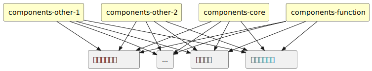
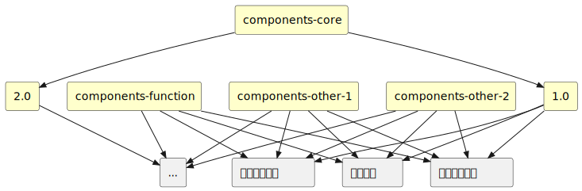
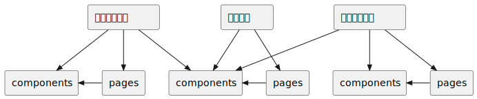

自从前端工程化被引入前端的体系之后，单页面，代码编译似乎成了前端项目的必选项。虽然他们给用户带来了良好的使用体验，大大增强了前端的功能，但是不可避免的带来了前端项目的逐步庞大化。如何从架构上解决，代码复用，项目拆分，缩减编译时间，更加简单的创建，发布项目代码是我们面临的困难。
在完成业务系统的时候，我们通过把公共组件放置在modules项目文件夹里面实现不同页面公用同一些组件。随着两个月作用的业务系统功能开发，modules变得不可维护。而且从产品节奏上出现了招聘系统，资产管理系统，工单系统等其他系统。为了解决公共代码只存在一个地方，所有系统运行时引用同一套公共代码两个问题，我们创建了ui_components项目。通过webpack5的邦联模块特性，业务系统在运行时通过remote-loader包动态加载ui_components里面的组件。这样做可以实现多个系统的组件出现bug，只需要修改ui_components的对应组件，然后发布ui_components项目不用修改任何业务系统项目就可以完成所有业务系统发现的对应bug，而且在整个系统中ui_components对于引用它的业务系统是强一致的，大大增强了可维护性，整个前端架构变成以下情况:
但是在各个项目的不断发展过程中我们经常遇到以下困惑:
业务系统搞了一个复杂的组件不确定其他系统是否用得到，继而不确定该组件是否需要放到ui_components里面
某一个业务系统用到ui_components里面得A组件，A组件出现了bug，我们在ui_components修复了问题，发布ui_components。由于每个系统里面依赖了很多ui_components的组件，ui_components的频繁发布会影响到所有系统的稳定性
ui_components的A组件在逐步发展的业务中被发现之前的设计已经越来越不满足需求了，对其进行API兼容式更新已经不能进行了，需要对其进行API不兼容式升级。如果贸然升级所有引用它的系统都要涉及到代码修改和回归测试，尽管其他系统并不需要用到A组件的最新特性。如果在ui_components中创建一个类A组件B，就可能导致ui_components中的组件爆炸式增长，后面又变得不可维护。
为了解决这些问题，我们对架构做了升级:
compoents-core中维护一个确定所有系统都使用到的基础组件统一维护，最少被修改和升级，其他组件库按照功能划分分别提供对应的组件。
为了解决组件破坏式更新，又升级了版本支持，组件库可以自行选择是否支持版本：
这样在组件破坏性升级时，可以升级对应组件库版本需要使用组件新特性的可以升级至新版本，其他系统可以暂时保持老版本。在新组件的特性稳定之后可以有计划的将其他系统升级到新的版本。这样保证了组件升级的连续性和可持续性。
现在我们的整个架构已经变得非常复杂，理论上我们可以将不同类型的组件归类到不同的组件库，由业务系统们去调用它们。可是根据我们现实生活中的经验，给一个东西归类是相当困难的一件事，非常困扰人的心智。而且在后面是否需要新加一个组件库，新加的组件库需要放哪些组件进去也是非常艰难的考量。
那么我们不禁要思考，组件库这个东西的必要性。我们引入这么一套复杂的东西，不断解决了开发中的问题，但是这个东西本该是怎么样的呢？
下面是我们典型的一个工作流程：

但是我们希望在今后的工作中能够尽可能的复用之前做过的业务所以在一定时间之后我们需要定期把之前的业务实现中的一部分抽取到公共组件中，上面复杂的架构也是用来管理这些公共组件的。
从业务实现中提取公共组件需要强大的外力推动，去不断要求所有开发才能做到，并不是一个自发的过程。
如果我们在业务之前预先设置公共组件呢？我们曾经也尝试这么去做，但是这种做法特别依赖于开发的开发经验，需要开发去预测一个组件应该具备什么样的功能，而且往往就算是经验丰富的开发也会陷入到组件的过度设计之中。
所以我希望我们的组件库是伴随业务实现来完成的，我们是否可以在业务实现的时候顺便把组件库完成了呢？
首先我先分清楚哪些代码是属于“业务”的，哪些代码是属于“组件的”。以我们业务系统的首页为例：
我们很容易将其划分为几个部分，但是他们看起来相当的“业务”，似乎不适合把它们归纳到任何组件库中。但是如果我们换一种思路，我们的业务组件系统本身就是一个组件库，它可以提供以上4个组件供页面组合调用，我们就不用去纠结这些组件应该归类在哪的问题。所以我们就可以定义，属于“业务”的代码时获取数据的逻辑，页面路由及拼装组合逻辑。展示内容，操作逻辑等属于“组件”。
那么我们从架构上，就没有专门的组件库项目和业务项目，我们只有一种类型的项目。它可以提供一个业务的运行环境和组件的运行环境。开发在做业务的时候根据大致区域划分，将页面拆解成组件，以组件规范来编写，然后在页面中调用完成产品业务需求。在后续出现和之前相似的业务形态时，通过升级该组件，逐步提高抽象程度来满足更多地方的调用。
所以我们的架构根据以上思路就调整为
如果某些系统开启版本控制就变为
这样调整之后，我们创建了统一的脚手架 @kne/cra-template-project 通过执行
npx create-react-app [包名] --template=@kne/cra-template-project
就可以创建一个项目，没有了所有的纠结，一切都显得那么自然。
创建好的项目包含两个环境，一个是组件开发环境，一个是业务环境。
点击右下角按钮进入组件开发环境
在组件环境，开发人员主要关注组件的样式，组件的状态，组件的交互。通过mock接口数据来进行独立的开发调试。该环境提供了用来描述组件的功能用途的格式，提供了用来展示组件功能的代码示例，提供了展示组件API文档的格式。屏蔽了其他组件的干扰，让开发更加专注于当前组件的功能设计和开发。
在业务环境，开发人员主要关注向后端数据的获取，和后端的交互。作为最终交付给测试的产品，更加关注于整体业务功能的实现。
更进一步的，为了整个系统的可持续发展，我们还是需要定期去评估，哪些部分应该进行更高程度的抽象。然后创建了components-core,components-function等项目，来收容这些自下而上抽象出来的组件。这些项目在架构层面和其他业务系统是一样的，并不是一种特殊的类型，只是我们从语义上赋予了特殊的地位，只有业务中的组件成熟了才会放进去，作为系统中最稳定的存在。
经过以上调整，整个系统架构可以随着业务需求的不断迭代，形成有组织有文档，可维护的大量组件群，用以越来越轻松地支持未来越来越庞大越来越复杂的系统，而不会随着系统越来越庞大而逐渐失控，不可维护。